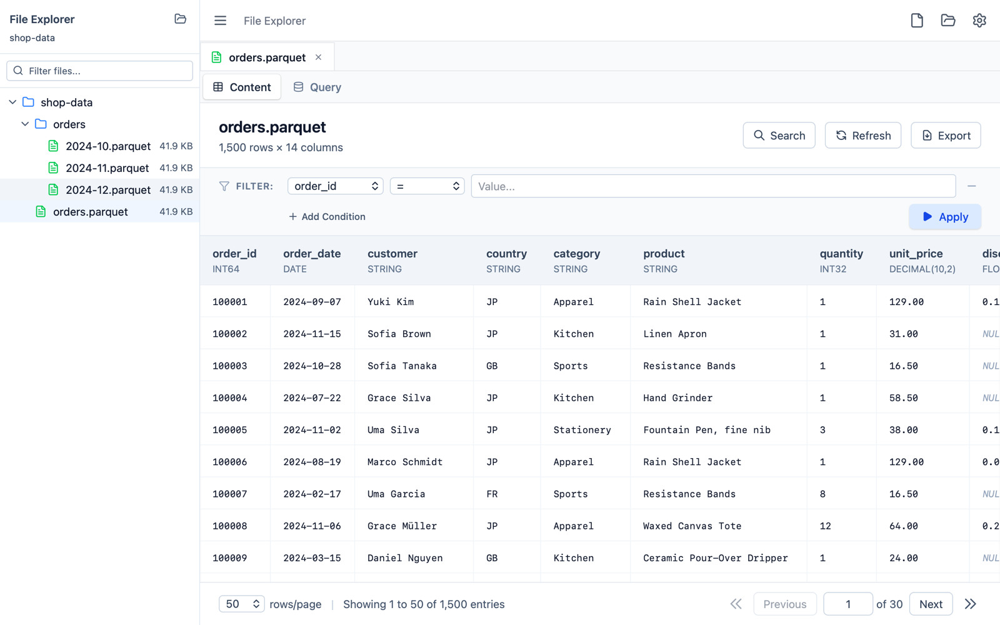

Open a Parquet file. Nothing else required.
Parqsee is a native macOS viewer for Apache Parquet: browse and page through the rows, filter and search them, run SQL over the file, and export what you found. No notebook, no cluster, no upload.
macOS 12 or later · Apple silicon and Intel

What it does
Everything runs on your machine, on files you already have.
Fast on large files
A Rust backend on Arrow and Parquet reads a page of rows by skipping the row groups before it, so a file with tens of millions of rows pages as quickly as a small one.
Real types, not guesses
Each column shows its Parquet type. Decimals, 64-bit integers and non-finite floats are rendered as they are stored, not rounded through a JavaScript number.
Filter and search
Build conditions over any column, or search the page you are looking at. The row order never changes when you add a filter.
SQL over the file
The open file is table t. Run a read-only DataFusion
query — aggregates, window functions, CTEs — and read the
result in the same grid.
Export
Write the whole file, the current page or the filtered rows to CSV or JSON. The rows are streamed, so the export uses the same memory for a thousand rows as for tens of millions.
A file explorer, in tabs
Open a folder and browse its Parquet files in the sidebar. Tabs, their page and their filter come back the next time you launch.
Opens from Finder
Double-click a .parquet file, drop it on the window
or the Dock icon. Recent files are one click from the start
screen.
Dark mode, English and Japanese
Follows the system appearance, and switches language in Settings.
Offline by construction
Your files never leave your Mac. No account, no telemetry, no cloud — see the privacy policy.
Free to use, one purchase to remove the limit
No subscription, no trial that expires, no license key.
Free
Free download
- Up to 3 files open at a time
- Paging, filters and search
- The SQL view
- CSV and JSON export
Full version
One-time in-app purchase
- Everything in Free
- As many files open at a time as you like
- Bought once, kept forever — no renewal